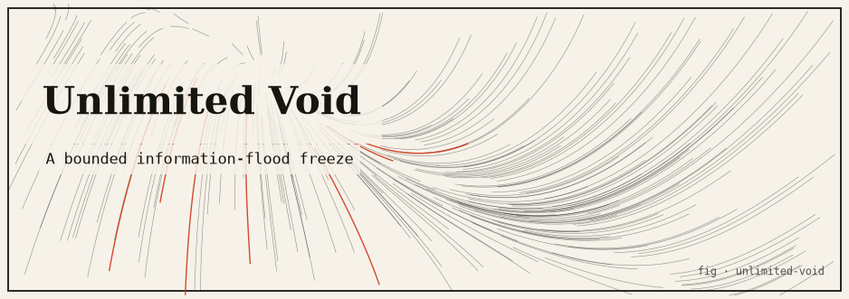

How Container Isolation Works (Gojo’s Unlimited Void)
Gojo’s Unlimited Void modeled as a container-runtime primitive: isolates a process in a simulated void of infinite information, pinning it with a massive constraint weight over a sandboxed process table.

The idea
In Jujutsu Kaisen, Gojo Satoru’s Unlimited Void traps a target inside an infinite flood of information: they receive so much input at once that they can no longer act — effectively frozen in place until Gojo releases them. That is a surprisingly good picture of what a container runtime does to a process: it wraps the process in a bounded world it cannot escape, and it can suspend that world at will.
This package implements Unlimited Void as a container-runtime isolation
primitive over a simulated in-memory process table. The “void” goroutine floods
the target process’s channel with messages faster than it can consume them, starving
it of the ability to make progress via backpressure — a stand-in for freezing an
isolated process. Framed in the sibling domain_expansion package, Unlimited
Void is the extreme case where one cell is pinned with weight 1×10⁶, producing
rigidity ≈1004.6 — astronomically higher than any normal Domain.
Honest caveat: the anime mapping is loose, and this is a model, not a real runtime. All process-table entries are goroutine-backed in-memory structs; no real Linux namespaces, cgroups, or OS processes are created, and no host resources are touched. “Isolation” here means the void goroutine cannot reach entries outside the sandbox table it owns.
The primitives real runtimes use
On Linux, a container is not a special kind of object — it is an ordinary process that the kernel has been told to view through a restricted lens. Two families of kernel features do almost all the work.
Namespaces give a process its own private view of a single kind of kernel resource. A PID namespace lets the process see its own numbering of process IDs, so it cannot even name, let alone signal, processes on the host. A mount namespace gives it a private filesystem tree, so it sees only the files the runtime chose to expose. A network namespace gives it its own interfaces, routing table, and ports. Because each namespace hides everything outside it, the process genuinely cannot perceive the rest of the system — the technical version of being sealed inside a void.
Cgroups (control groups) handle the other half: resource limits. Where namespaces control what a process can see, cgroups control how much it can consume — a ceiling on CPU shares, memory, or I/O bandwidth for a whole group of processes. Cgroups also provide a freezer that can suspend every process in a group at once and thaw them later, which is exactly the suspend/resume behaviour this project models when the void is activated and then lifted.
How this project demonstrates it
- A simulated process table holds goroutine-backed worker entries — the sandbox that stands in for a set of contained processes the runtime owns.
- Activating Unlimited Void on a target spawns a flood goroutine that sends to the target’s input channel at maximum rate with no throttle, modelling the suspension of an isolated process.
- The target’s select loop is overwhelmed and can make no progress on its work queue — the effect a cgroup freeze or a starved resource limit would have.
- A cancel context lifts the void, restoring the target’s channel to normal backpressure — the thaw side of freeze/thaw.
- Isolation is verified: the void goroutine can only affect its target and cannot reach processes outside the sandbox table, mirroring how a namespaced process cannot touch the host.
Unlimited Void container questions
What makes a container isolated from the host?
Mostly namespaces and cgroups. Namespaces give a process a private view of a kernel resource — its own PID numbering, mount table, or network stack — so it cannot see or touch resources outside its namespace. Cgroups then cap how much CPU, memory, or I/O that group of processes may consume.
What is the cgroup freezer, and how does it relate to Unlimited Void?
The cgroup freezer suspends every process in a cgroup at once, leaving them unable to make progress until they are thawed. That maps onto Unlimited Void: the target is effectively frozen and starved of the ability to act, then released when the void is lifted.
Does this project create real Linux containers?
No. It runs over a simulated in-memory process table the program creates and owns. Entries are goroutine-backed structs, not real OS processes, so no real namespaces or cgroups are created and no host resources are touched.
Run it
git clone https://github.com/caelum0x/awesome-mad-projects.git cd unlimited-void go test ./... go run . # Process 'target-A' work rate: 1200 ops/sec # Activating Unlimited Void on target-A... # Process 'target-A' work rate: 0 ops/sec (paralysed) # Other processes unaffected: target-B 1198 ops/sec # Lifting void... target-A restored: 1201 ops/sec